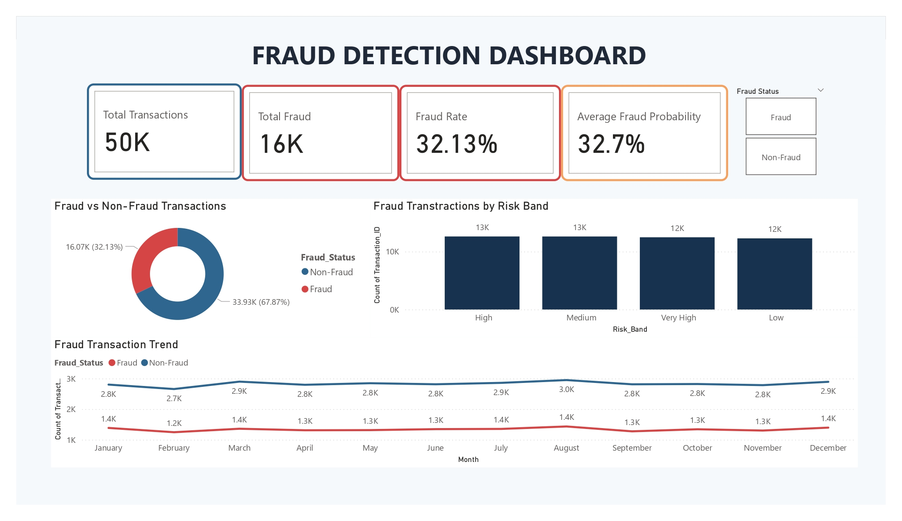
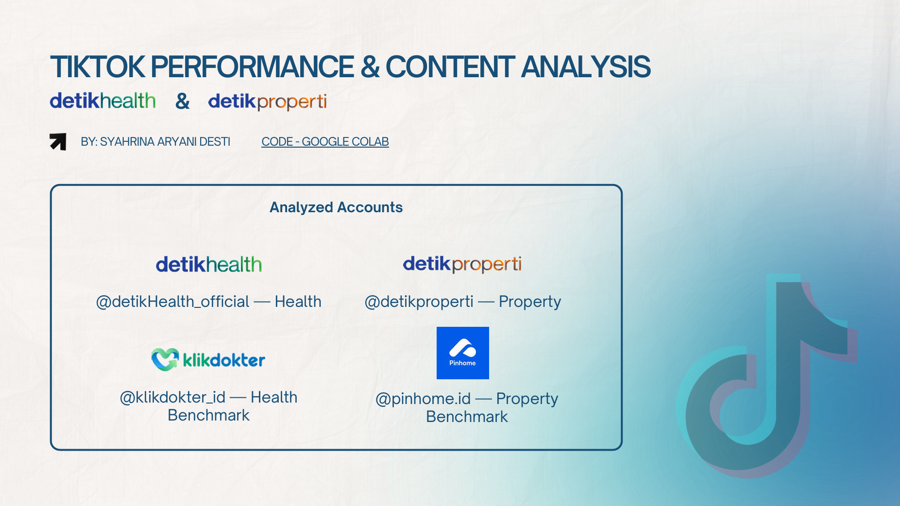
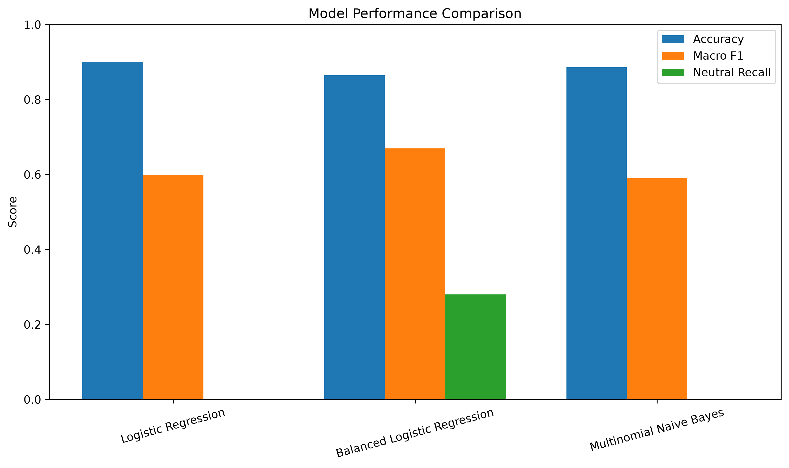

Proyek Unggulan
Kumpulan proyek yang menunjukkan kemampuan saya dalam pengolahan dan analisis data, identifikasi pola, monitoring performa, pengujian model, serta penyajian informasi melalui dashboard dan visualisasi data.

01Fraud Detection & Dashboard Power BI
Proyek machine learning untuk mendeteksi transaksi fraud menggunakan algoritma Random Forest dan menganalisis pola transaksi melalui dashboard Power BI.
Mengevaluasi performa model menggunakan Precision, Recall, ROC-AUC, dan PR-AUC serta menyajikan pola transaksi dalam visualisasi interaktif.
Python · Random Forest · Power BI
Lihat Proyek →
02TikTok Performance & Content Analysis
Menganalisis performa konten TikTok pada akun detikHealth dan detikProperti dengan membandingkan performa terhadap akun benchmark pada kategori Health dan Property.
Mengidentifikasi performance gap, mengevaluasi engagement rate, menemukan winning content, serta menyusun rekomendasi peningkatan reach dan konsistensi performa.
Python · Google Colab · Data Analytics · Data Visualization
Lihat Proyek → 03
03
Supermarket Sales Dashboard
Mengolah dan menganalisis data penjualan supermarket untuk memantau revenue, net revenue, profit, dan rating pelanggan berdasarkan kategori produk.
Mengidentifikasi tren profit, membandingkan performa kategori produk, dan menganalisis pola metode pembayaran untuk menghasilkan insight bisnis.
Power BI · Data Analytics · Data Visualization
Lihat Proyek →
04Sentiment Analysis Amazon Reviews
Melakukan analisis sentimen ulasan pelanggan Amazon menggunakan metode TF-IDF dan algoritma Logistic Regression.
Melakukan preprocessing data teks dan mengevaluasi performa model menggunakan Precision, Recall, dan F1-Score pada setiap kelas sentimen.
Python · TF-IDF · Logistic Regression
Lihat Proyek →